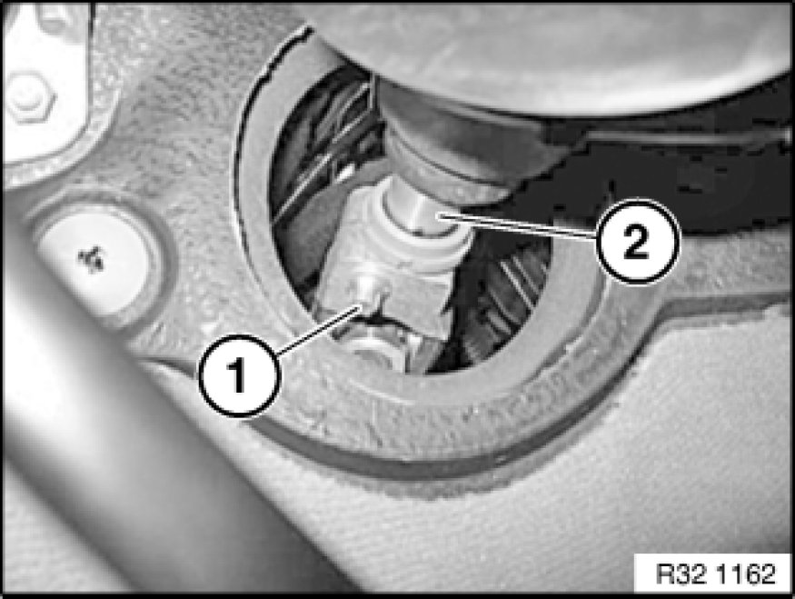
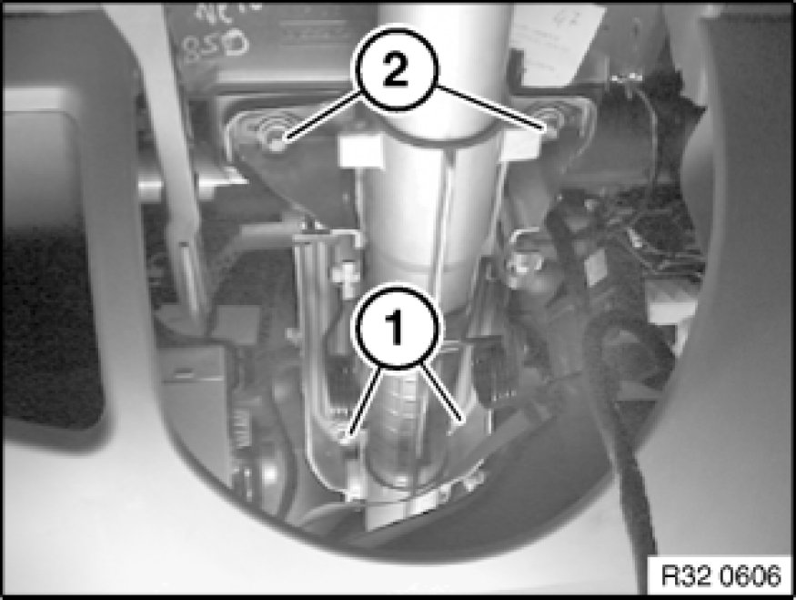

32 31 090 Removing and Installing/Replacing Steering Column
32 31 090 - Removing and installing/replacing steering column

Note:
Cars produced up to 12/2004 have a steering column with a 3-pin plug connection for electric steering column locking. Cars produced after this date have a 4-pin plug connection. Spare parts are offered for both variants.

Necessary preliminary tasks:
- Remove footwell heating duct
- Remove steering column trims
- Disconnect all plug connections at fixture for steering column stalk
- Disconnect plug connection on electric steering column lock
- Remove wiring harnesses from steering column
- Slide sleeve for steering spindle on steering column upwards.
This operation is described in 3231102 32 31 102 Replacing Steering Spindle Sleeve
Installation:
Press sleeve into bulkhead and check installation position, correct if necessary.

Release clamping screw (1) on steering column (2).
Installation:
Tightening torque 32 31 1AZ Specifications.
Clean thread to remove all remnants of screw securing adhesive.
Replace clamping screw.
Clamping screw must rest in groove of steering column.
No kinking permitted!

Release screws (1).
Tightening torque 32 31 2AZ Specifications.
Secure steering column against falling out.
Unfasten screws (2).
Tightening torque 32 31 2AZ Specifications.
Remove steering column towards rear.
Installation:
Prior to installing, slide sleeve onto steering column.
Replacement:
- Modify airbag unit
- Modify steering wheel
- Modify fixture for steering column switch Service and Repair
After installation:
- Replacement: Lock and unlock electric steering column lock and clear fault memory in Car Access System (CAS).
- Replacement: Turn steering wheel in both directions to full lock. The airbag warning lamp must not light up in the process.
- Carry out steering angle sensor adjustment / adjustment for active front steering.
- Check directional stability of car.